+1000EXERCÍCIOSPARA IDOSOS
exercícios adaptados, organizados por nível e objetivo
para transformar seus atendimentos
Sem montar sessão do zero
Sem improvisar no atendimento
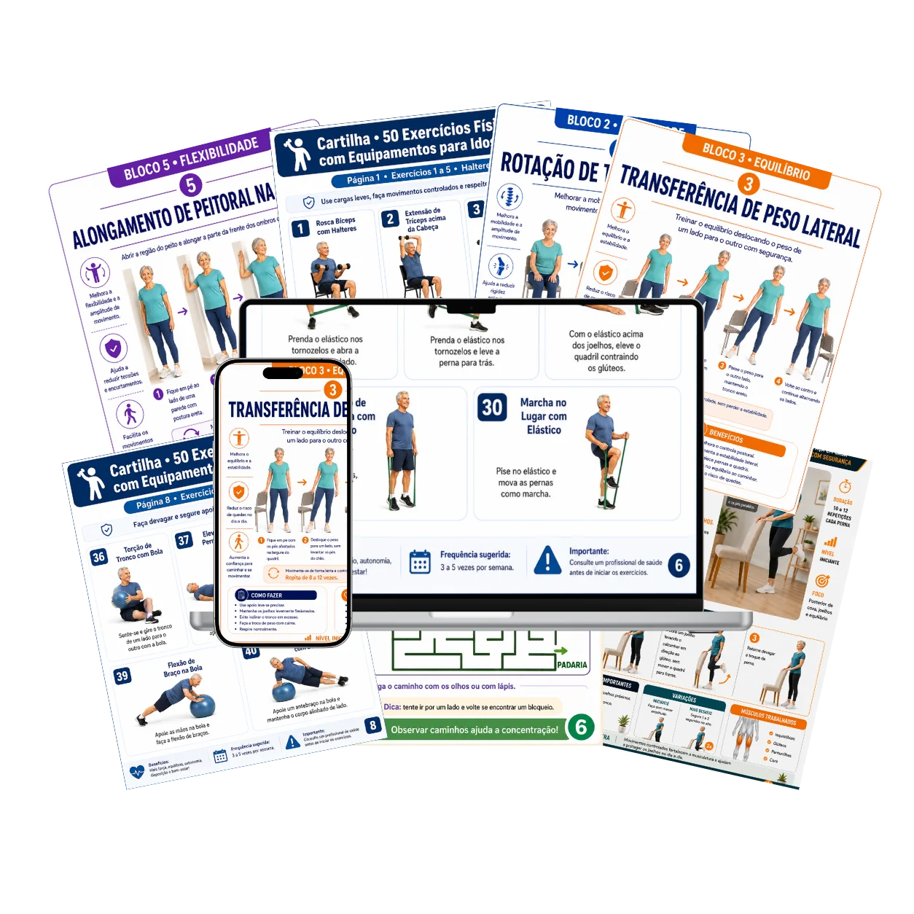
Assista esse vídeo para ver o que vai receber:
Quero meu kit agoraPor que profissionais escolhem esse kit?
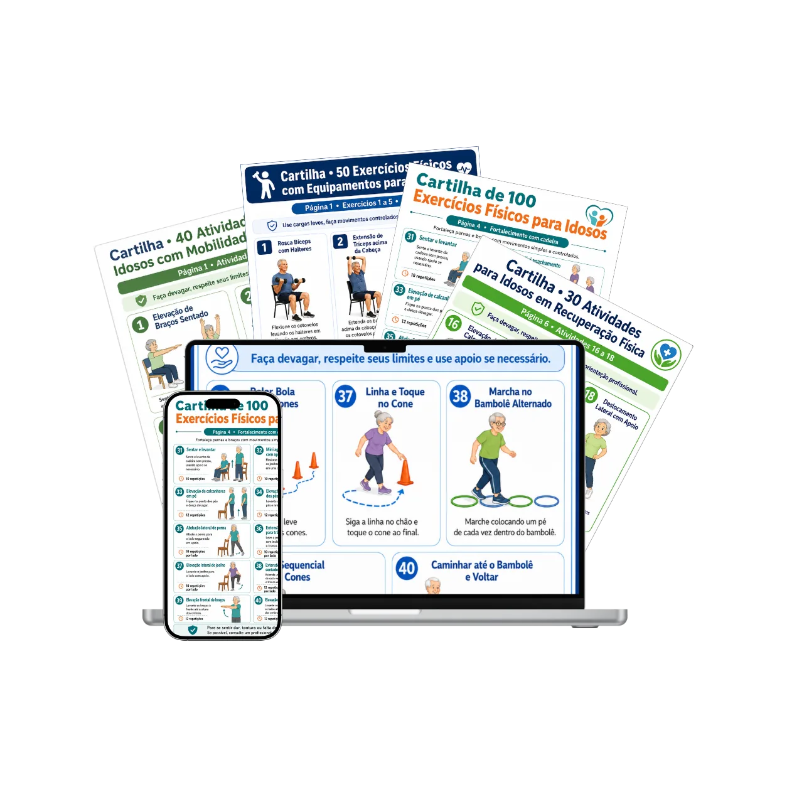
O Kit +1000 Atividades é um material completo de exercícios adaptados para idosos, organizado por nível, objetivo e tipo de exercício, preparando você para atender, planejar e aplicar a sessão com confiança, simplificando a rotina de quem trabalha com a terceira idade todos os dias.
Com o Kit +1000 Atividades, você vai parar de improvisar e começar a aplicar com clareza, equipado com cartilhas, exercícios ilustrados, progressões seguras e bônus exclusivos prontos pra usar no atendimento individual ou em turma.
Essa é a melhor forma de elevar a qualidade dos seus atendimentos, trabalhando com confiança e oferecendo aos seus pacientes mais autonomia, mobilidade e qualidade de vida no dia a dia.

Exercícios c/ Equipamentos
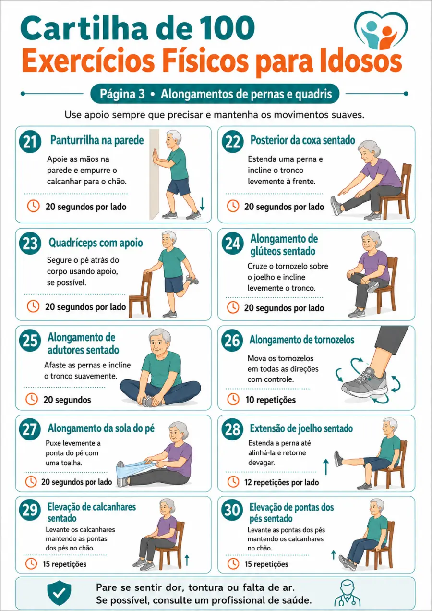
Exercícios s/ Equipamentos

Exercícios Cognitivos

Guia de Avaliação Física
Veja um pouco das páginas
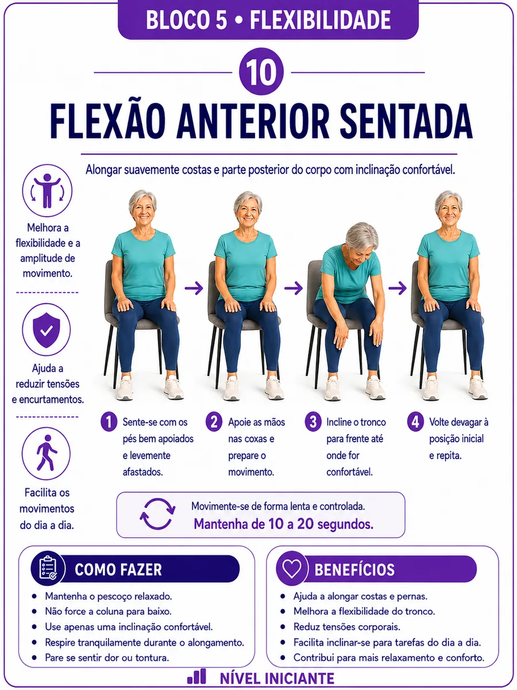

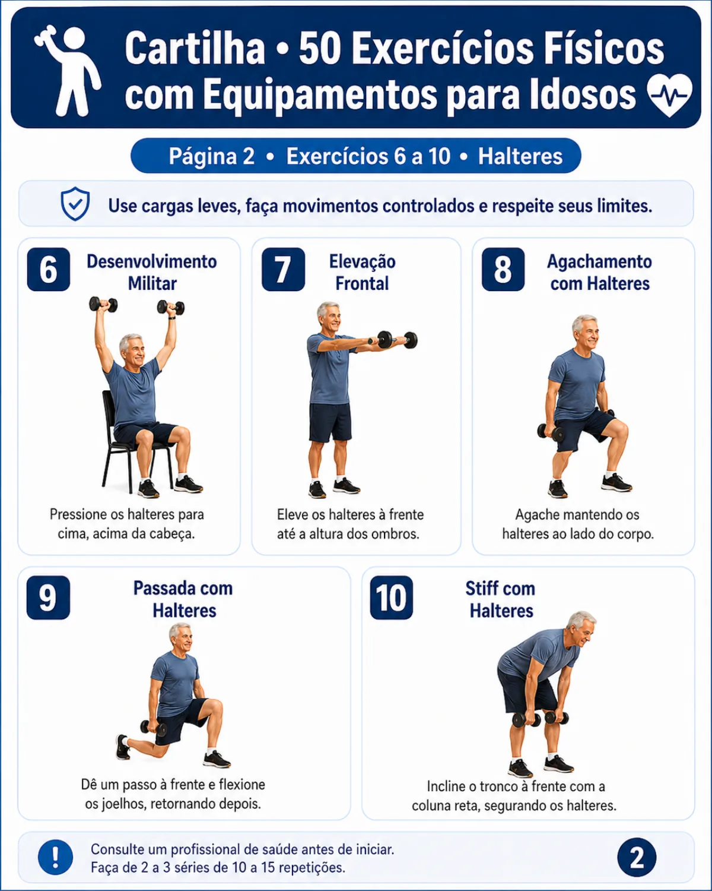
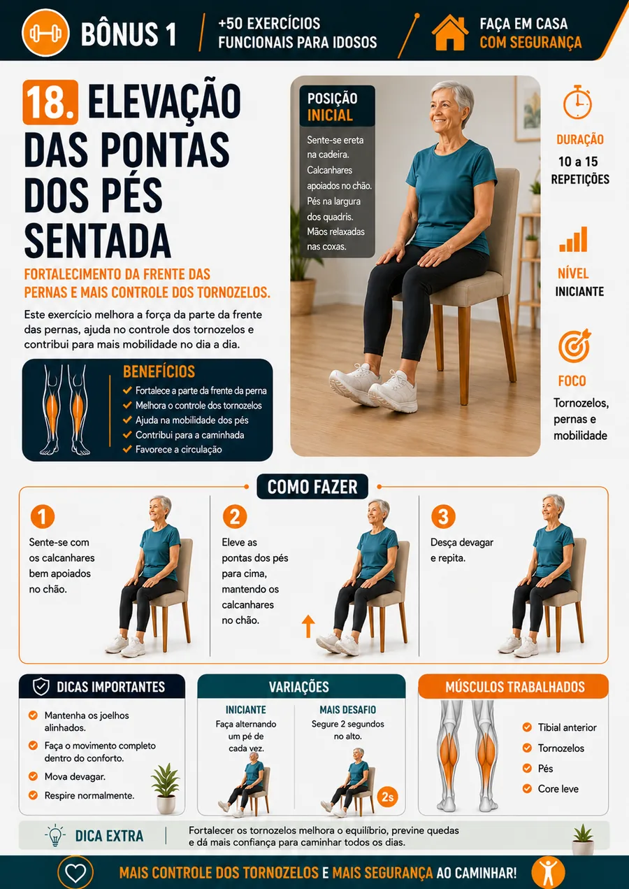
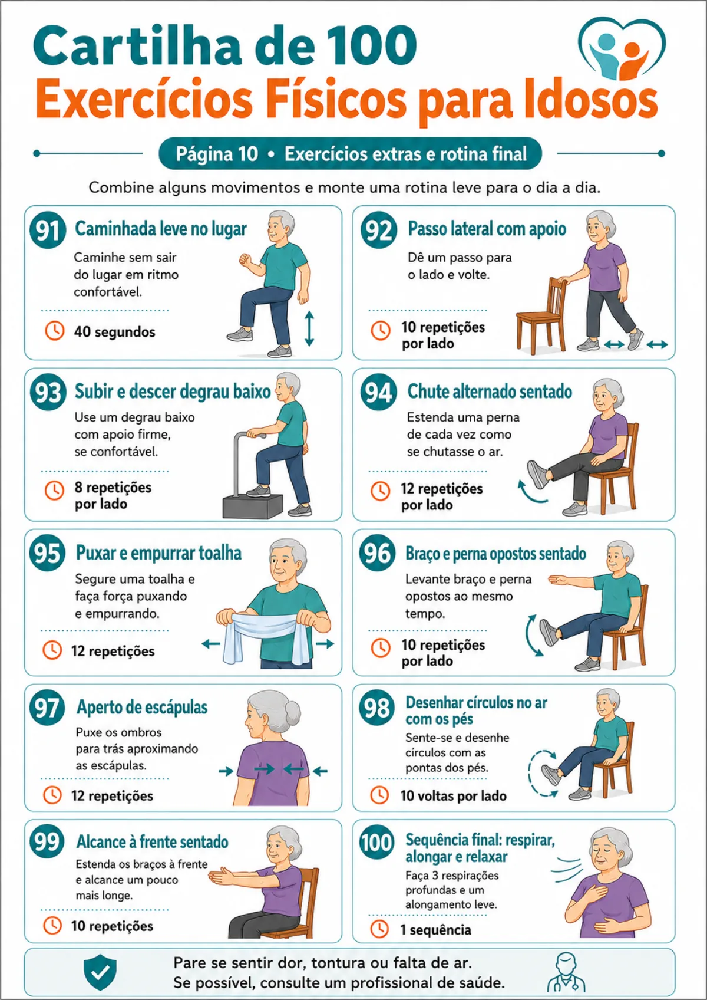
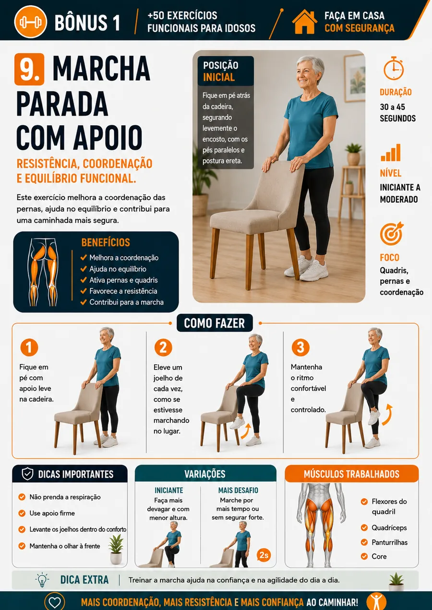
- Atividades organizadas por nível e objetivo
- Exercícios ilustrados com passo a passo
- Progressões seguras para qualquer condição
- Cartilhas prontas para imprimir e aplicar
- Bônus exclusivos para casos especiais
- Acesso digital pelo celular ou computador
Para Quem É Este Material
Fisioterapeutas
Ideal pra quem precisa de mais variedade nos atendimentos. Com esse kit você chega na sessão sabendo exatamente oq vai aplicar, sem improvisar.
Educadores Físicos
Perfeito pra quem trabalha com turma de idosos e precisa de atividades organizadas, seguras e prontas pra usar no dia a dia.
Cuidadores de Idosos
Mesmo sem formação técnica, dá pra oferecer muito mais qualidade de vida e estímulo físico com esse material. É simples e direto.
"Vou ter que ser especialista pra aplicar"
👉As atividades são organizadas por nível e objetivo, com instruções simples. Se sabe ler, sabe aplicar.
"Meus idosos têm mobilidade reduzida"
👉Tem um bônus exclusivo com +40 atividades adaptadas pra quem tem mobilidade reduzida ou está em recuperação.
"Já tenho material parecido"
👉Aqui são +1000 atividades organizadas por categoria, prontas pra usar. Você nunca mais vai improvisar uma sessão.
"É muito caro pelo conteúdo"
👉Por menos de R$30 você leva o kit completo + 3 bônus. É menos que uma sessão avulsa.
Você também leva isso de graça
3 bônus exclusivos pra você aplicar com mais segurança em qualquer condição de idoso.
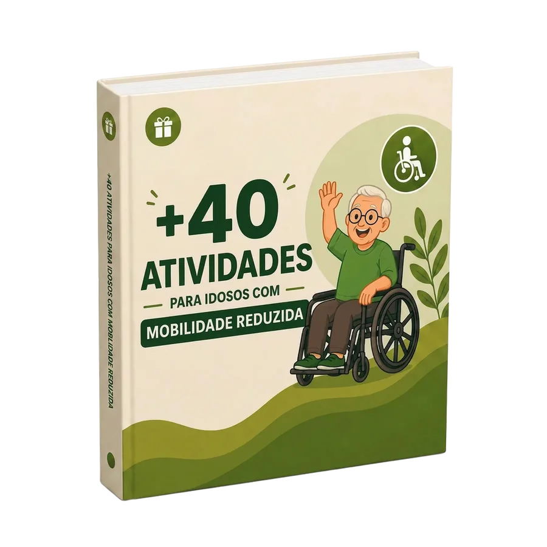
+40 Atividades para Idosos com Mobilidade Reduzida
Exercícios adaptados pra idosos cadeirantes ou com dificuldade de ficar em pé. Seguros e prontos pra aplicar.
Valor: R$ 47,00
Hoje: Grátis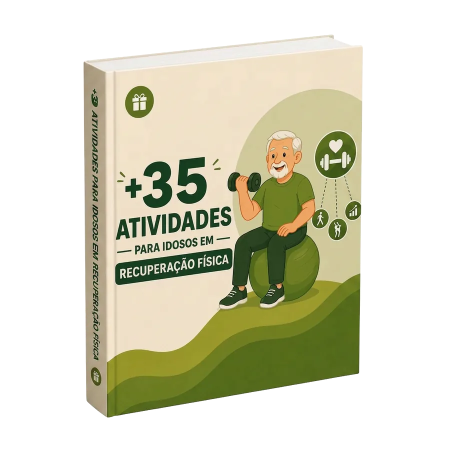
+35 Atividades para Idosos em Recuperação Física
Exercícios leves pra quem tá em recuperação ou com limitações físicas. Progressão segura do repouso à atividade.
Valor: R$ 47,00
Hoje: GrátisGuia de Avaliação Física para Idosos
Aprenda a avaliar mobilidade e limitações antes de começar. Mais segurança pra você, mais resultado pro paciente.
Valor: R$ 53,00
Hoje: GrátisEscolha Seu Plano
Kit Básico
Pro essencial
- Acesso ao material principal
- Atividades organizadas por nível
- Acesso digital
- Garantia de 7 dias
- Bônus exclusivos
- Atualizações mensais
Kit Completo
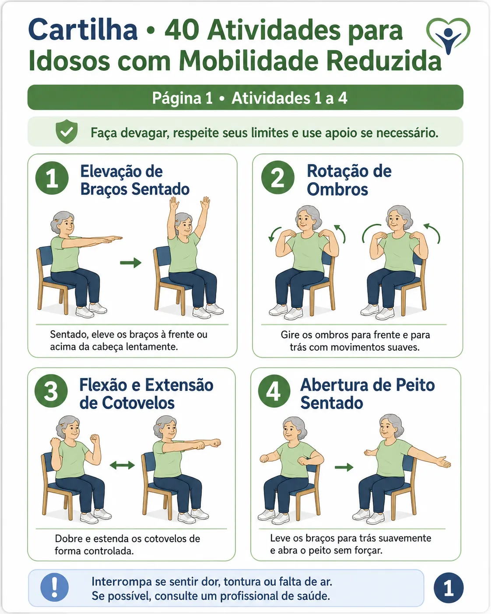
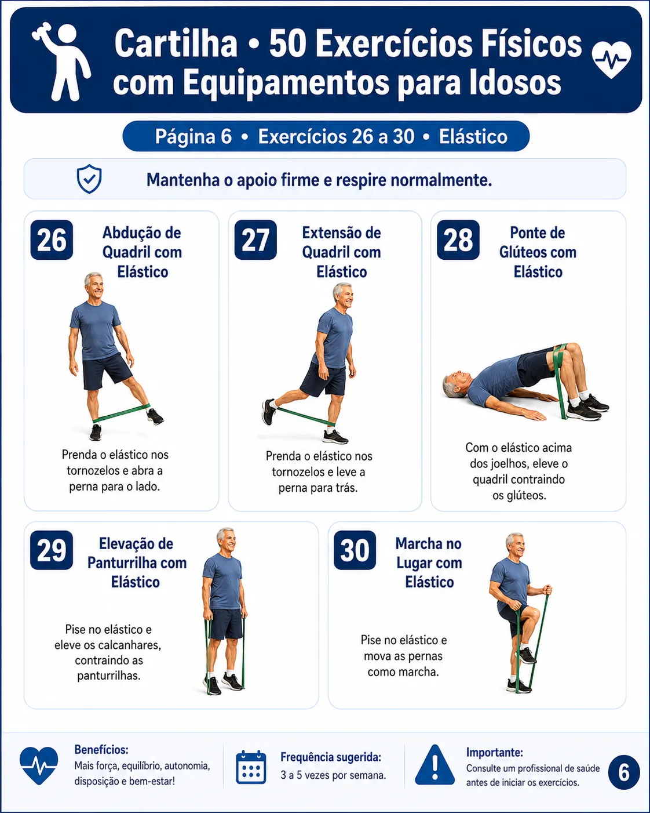
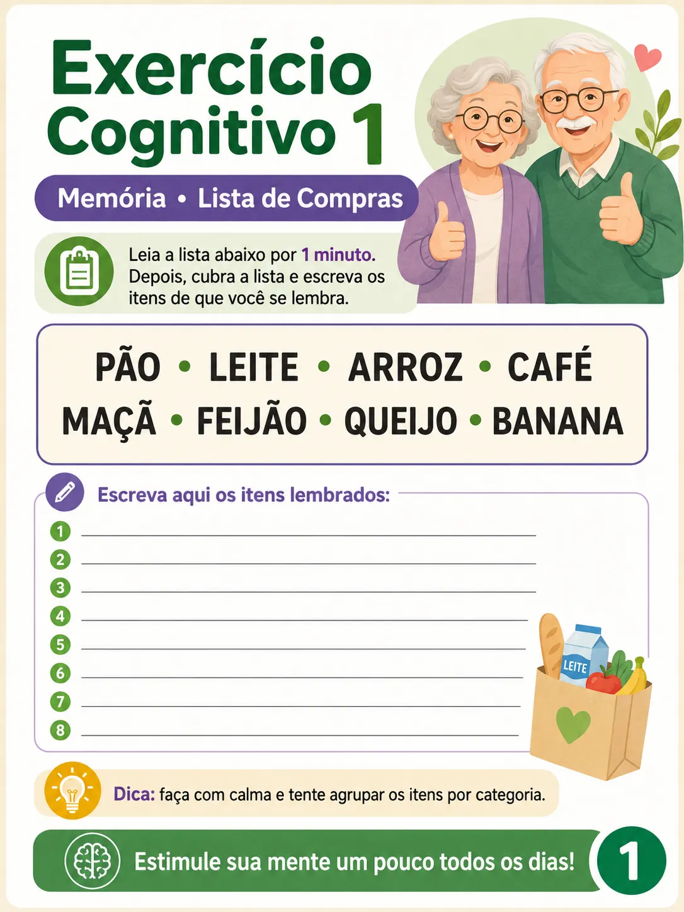
- +1000 Atividades e Exercícios para Idosos
- Organizadas por nível e objetivo
- Acesso digital
- BÔNUS: +40 Atividades para Idosos com Mobilidade Reduzida
- BÔNUS: +35 Atividades para Idosos em Recuperação Física
- BÔNUS: Guia de Avaliação Física para Idosos
- Atualizações mensais
- Suporte prioritário
- Garantia de 7 dias
O Que Nossos Clientes Dizem
Mensagens reais de profissionais que já estão aplicando o material no atendimento.


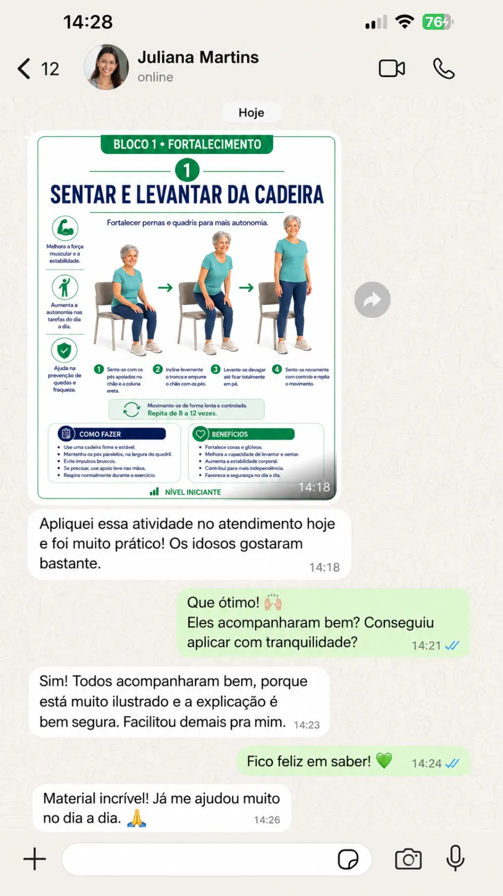
Garantia de 7 Dias
Teste sem risco. Se não gostar, devolvemos seu dinheiro, sem perguntas.
Comprar com segurançaPerguntas Frequentes
Tirando aquelas dúvidas que aparecem antes da compra.